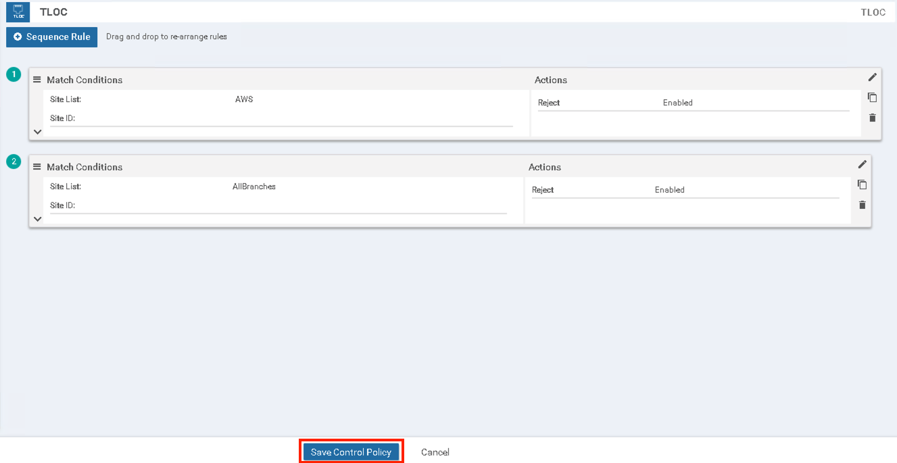

Task 11 - Additional Task for creating Partial Hub and Spoke
In this task, you will create partial hub and spoke topology, where VPN 10 and 20 will be reachable via DC vEdge while VPN 30 is Fully mesh. We will re-use exsiting Hub-Spoke Topology that was created in Task 8 and change it accordingly.
Step 1: Open vManage and Deactivate Existing AAR pplicy
- Click Configuration>Policy

-
On the upper right hand, click Custom Options and select CLI Policy

-
Select AAR-Policy and click ... then select Deactivate,

-
Confirm deactivation by clicking Deactivate again

Step 2: Creating New Custom Topology
-
Click Configuration>Policy
-
Create another customs CLI topology by clicking Custom Options > Topology

-
Click ... > Copy next to Hub and Spoke policy

-
Enter new Topology Name and Description
Policy Name
Partial-Hub-Spoke
DescriptionHub and Spoke for VPN 10, 20 while Full Mesh for VPN30
-
Edit Hub-Spoke Topology to create topology rules by selecting ... > Edit

-
Edit the 1st Rule by clicking Pencil icon

-
Remove CL-Brach1 from Site List and Add AllBranches
-
Select VPN and click New VPN List to exclude VPN 30

-
Enter VPN List Name add VPNs 10,20 and click Save

-
Select newly created VPN list VPN10-20 and click Save Match And Actions,
-
Delete the 2nd and 3rd Rule.

-
Click TLOC
-
Edit TLOC Policy related to ALLBrancehes and Select Action
-
Select Accept and click Save Match and Actions to save the rule
-
Click Save Control Policy

Step 3: Importing New Custom Topology to Main Policy
-
Click Centralized Policy

-
Then on the next screen click Add Policy then click Next
-
Click Add Topology then select Import Existing Topology

-
On Policy Type select Custom Control (Route and TLOC and on Policy select the new created Partial-Hub-Spoke topology

-
Click Next

-
Click Next again

-
On Policy Application enter new policy name description page click New Site List

-
On Outbound Site List select AllBranches then click Add

-
Save Policy by clicking Save Policy Changes

-
Activate policy by selecting ... then Activate Policy

Step 4: Verification
-
Once the process shows Sucess as below. Verify the connectivity using following commands on DC1-vEdge, BR1-vEdge and BR2-vEdge
show ip route vpn 10
show ip route vpn 20
show ip route vpn 30